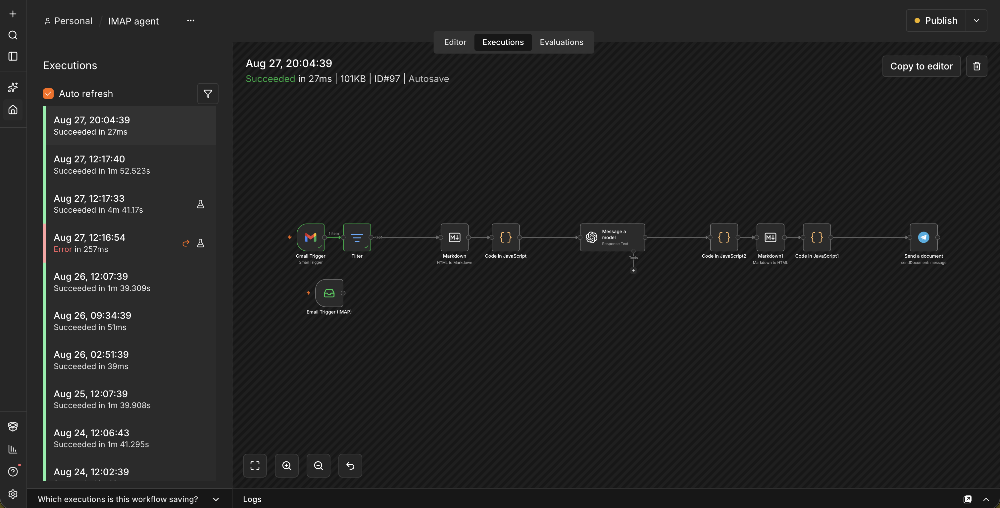
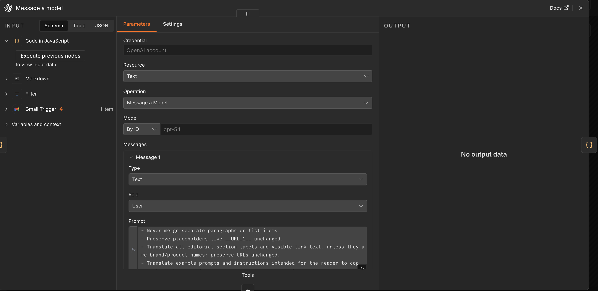

Workflow & Automation · n8n / APIs / AI
Automation that removes repetitive work
I build automated workflows that connect different systems and handle repetitive processes without requiring manual work at every step. Depending on the project, this can involve APIs, webhooks, n8n, AI models and custom code.
My Role
Connecting systems, removing manual steps
A lot of day-to-day business work is repetitive: copying data between tools, checking for new orders, reformatting information, forwarding it to the right place. I build automated workflows that handle this instead — triggered by events, connected through APIs and webhooks, and routed to the systems that need the data.
Where it makes sense, I add AI into these workflows — not as a gimmick, but where it provides a practical advantage: classifying incoming requests, extracting structured data from unstructured text, summarizing content or assisting with decisions that would otherwise take manual review. The goal is always the same: less manual work, fewer mistakes, and systems that stay in sync automatically.
What I Build
Diagrams below are representative examples of the workflow logic built for these types of projects.

Workflow Automation
Connecting events and services into automated workflows — triggering actions, transforming data and routing it to the right system.

AI-Powered Processing
Adding AI to workflows where it provides a practical advantage — classification, extraction, summarization, content processing or assisting with repetitive decisions.
API & System Integrations
Integrating platforms through REST APIs and webhooks so information can move between systems automatically instead of being copied manually.
Notifications & Internal Workflows
Automating internal notifications and follow-up actions based on events, conditions and business rules.
Have manual processes that could run themselves?